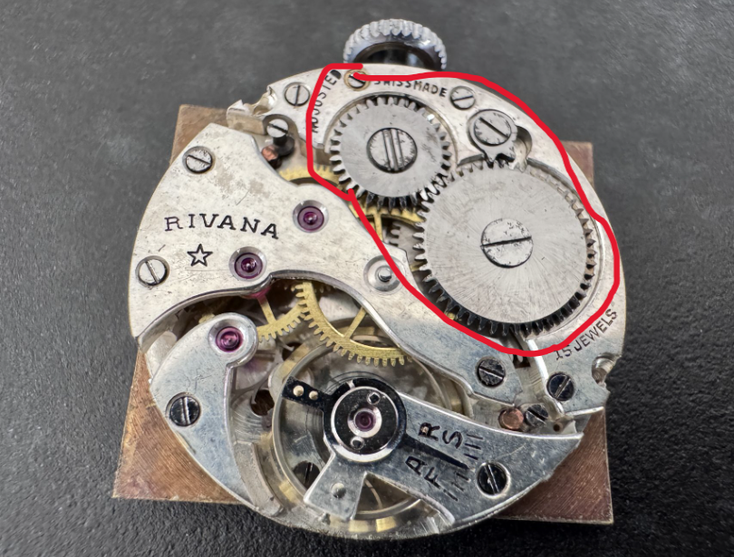

The Click & Ratcheting System
To start off, you need to know what a bridge is. A bridge is a piece of metal that holds the parts of a watch; it is an upper piece that you can remove. The circled part in the image above is called the ratcheting system. There are multiple parts in the ratcheting system: the click, ratcheting wheels, and the mainspring wheel.
To start with the mainspring wheel, the mainspring wheel is the power behind the watch. It is a small spring about 5mm tall; the spring is wound into a geared tube, and this tube connects to the ratcheting wheels. The next parts are the ratcheting wheels—two interlocking gears, where one is attached directly to the mainspring wheel and the other is generally on a metal pivot.
This wheel is interlocking with a gear attached to the crown, which is how you wind the watch. Both the crown and this wheel connect to transfer horizontal movement into lateral movement. This makes it so that when you turn the crown, the mainspring gets tightened.
Now, with the big parts together, it looks complete, but we are missing the click. The click is what keeps the mainspring from instantly unwinding. It is a small piece of metal holding against the walls of the bridge; the other end of it holds against the ratchet wheel to stop it from moving one way. The other side of the click rests against a spring so it can move but will snap back into place.
It does this so you can wind the watch, letting the ratchet wheel slip and move forward, but preventing it from moving back. In conclusion, this is the ratcheting system which safely stores power for the watch.